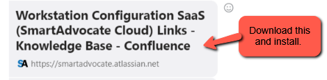
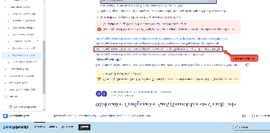
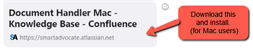
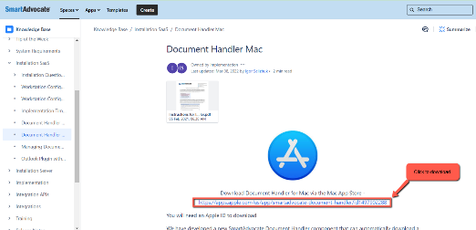

Setting of Expectations
Brief meeting with the trainees from 8:00-9:00AM to provide instructions for the typing & spelling tests and to set expectations for the entire standardized classroom training.
Typing & Spelling Activity (8:00-8:10AM)
https://www.typingclub.com/sportal/program-3.game https://spellquiz.com/spelling-test/grade-12
Alternative Links:
https://www.typingtest.com/ https://spelling-test.com/spelling-exercise#question_16
Naming Convention:
Sample Screenshots
Note: Typing tests are done twice a day, in the morning and before the end of the shift, while the spelling test is once a day only, either in the morning or in the afternoon. If you miss any tests, you must make up for them during your idle time. You may also take additional rounds of typing and spelling tests during your idle time or after the shift.
Hubstaff To-Do Set-up (Daily Requirement)
Trainees must set their HS To-Dos daily using the following templates:
Daily To-Do Templates
Training Reminders
Please be reminded to regularly check our #training-reminders so you’re always guided on the right things to do for your HS To-Do, deliverables, and other important reminders throughout the entire training period. Thank you.
Reading Task: Personal Injury Cases (Overview: What is personal injury?) – to be completed w/in 2nd - 3rd hour of training day
A. Go to this link and read on to get a good grasp of what we do here in the firm.
https://drive.google.com/file/d/1VAn-xmcozdHqr-7pzpnY0Rlsc4-4T43O/view?usp=sharing
B. Answer the following questions:
1. What is personal injury and what are its types?
2. Can you enumerate the stages of a personal injury claim on your own understanding?
3. How much is the common compensation for a personal injury claim?
4. How long does it take for a personal injury case to resolve?
5. What are the common factors that affect a personal injury case?
6. What do you think are the advantages and disadvantages of pushing for a case to litigation (going to court)?
Note: Please send you answers here in our group chat so we know that you are done. You may write your answers using WORD document or NOTEPAD and use this naming convention:
Thank you.
Supplementary Tasks (while waiting):
For those who are done with the reading task, you may review your training materials , your TAM or read through this article from VLF.
https://drive.google.com/file/d/1ZOVrwOTPEz9WuwDRbBsBCNuHqf8wb8h4/view?usp=sharing
PM: Nitro Pro 12 (pdf editor) and Smart Advocate Plug-ins
After completing your task on Personal Injury Overview, please proceed to download and install the Nitro Pro 12 (pdf editor) and the Smart Advocate plug-ins. Carefully follow the instructions provided and the screenshots of the steps below. Thank you.
For MAC users, since Nitro Pro is not compatible with the OS, you may use another PDF editor that has features such as text editing, file extraction, and combining documents. Alternatively, you can use this online PDF editor for your future activities.
How to install the Smart Advocate/SA plug-ins:
1. Install the SA Document Handler/Launcher. Unzip its folder first, then right-click on the zipped file and select "Extract Here." Proceed with the installation.
SA Document Handler/Launcher
https://drive.google.com/file/d/19eFGdoQNXJo2iE46M2G8s2bMJNEIeO8k/view?usp=sharing
Screenshots
https://drive.google.com/drive/folders/1lJlDxRx_HjzuhHjcjymNbyw4yBr09qU_?usp=sharing
2. For Windows Users, access the link and download the 2nd hyperlink to install Microsoft Word, Excel, and Outlook plugins on your desktop. Follow steps 2-7 as indicated below the list of hyperlinks on this page:


For Mac Users, access the link and download plugin on your desktop. Follow the steps indicated below the link on this page:
https://smartadvocate.atlassian.net/wiki/spaces/KB/pages/876020096/Document+Handler+Mac


3. Once you have downloaded the Microsoft Word, Excel, and Outlook plugins, double-click the "Set Up" application to install.
Note: This process may take a little longer to complete the download and installation.
4. Lastly, double click the Registry to install.
For those who still have issues installing Nitro Pro despite carefully following the correct process, you may seek technical assistance from Sanders. For the SA plugins issue, you may reach out to Ivan. Message them at 8AM PST.
Here are the Discord IDs of Sanders and Ivan. Please be reminded once again that their shift starts at 8:00 AM PST.
Sanders: sndrrsss9920
Ivan: kuchiq
Just a heads-up, for the SA plug-ins, for now, there is no way for us to check whether they have successfully installed. We will only know if the installation was successful when we start using the firm’s CMS (SA) which is scheduled for around the 8th or 9th of your classroom training. As long as you have this in your list of installed apps then you're good for now.
HOMEWORK: Nitro Pro and Adobe Acrobat Pro
📌To be accomplished outside training hours. 📌
Please watch the instructional videos on how to navigate either Nitro Pro and Adobe Acrobat Pro, depending on the software you are using.
If you are using Nitro Pro, watch the Nitro Pro tutorials.
If you are using Adobe Acrobat Pro, watch the Adobe Acrobat Pro tutorials.
Focus on the version relevant to your available tool. Thank you.
HOW TO USE NITRO PRO
PART 1: https://drive.google.com/file/d/1t1xyjsqum9HRv6c4TZDGmGct297WyAwb/view?usp=sharing PART 2: https://drive.google.com/file/d/1Y6TYfqzZ5kFHdvcxxi1XS2XgVwnXOdFd/view?usp=sharing
ADOBE ACROBAT PRO TUTORIAL
https://drive.google.com/file/d/1DpbcYj7TtJkU7WhIdmety7Xqi3kegHl3/view?usp=drive_link
*** Free Communication Upskill for 1 or 1 ½ hours